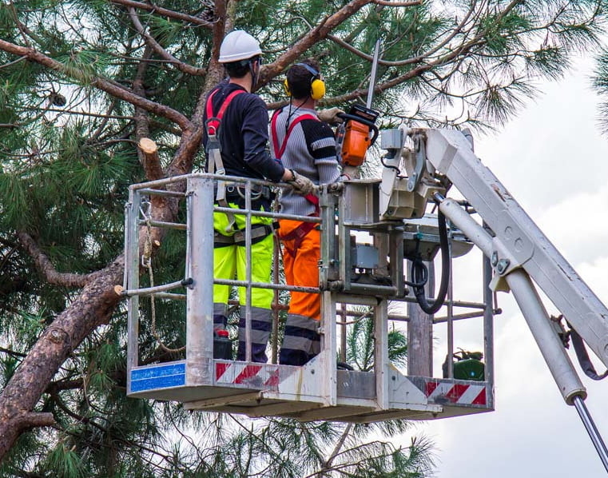
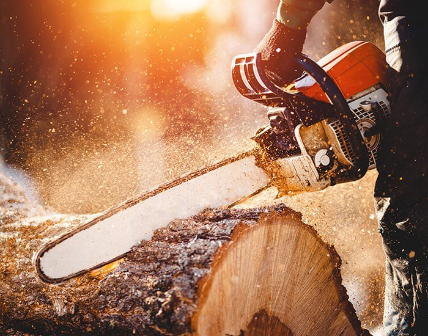
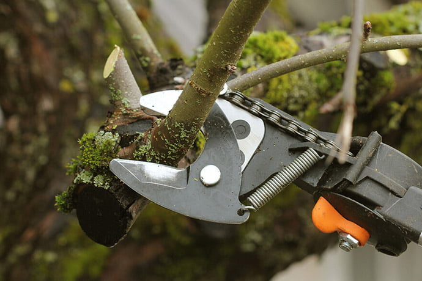

Professional tree service for Mount Pleasant, Charleston and the Lowcountry.
Tree Men, LLC is a locally owned tree care company handling tree removal, trimming, pruning, stump grinding, storm cleanup and debris removal for residential and commercial properties.
Safe, clean and professional tree work from a local crew.
Tree Men serves the Greater Charleston area with the equipment, experience and attention to detail needed for proper tree care.
From hazardous tree removal to careful trimming around homes, fences, driveways and utilities, the goal is simple: protect the property, do the work correctly and leave the site clean.
Why Choose Tree Men

Everything your trees need, handled correctly.
Tree Removal
Safe removal for dead, diseased, storm-damaged or hazardous trees.

Stump Grinding
Clean stump removal to reclaim space and reduce unwanted regrowth.

Tree Pruning
Health-focused pruning that improves structure, shape and long-term growth.

Tree Trimming
Balanced trimming for safety, clearance and curb appeal.
Need a tree removed, trimmed or inspected?
Serving Mount Pleasant, Charleston, Daniel Island and surrounding Lowcountry communities.


Clients appreciate dependable service.
“Having a knowledgeable arborist with great experience is a must. Tree Men is just that.”
Gary W.“They did a great job and were very efficient. My yard looks so much bigger and open.”
Lisa M.“They show up when they say they will and do the work they have been contracted to do.”
Michael M.